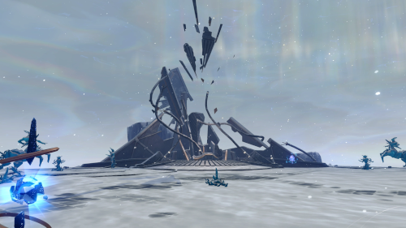
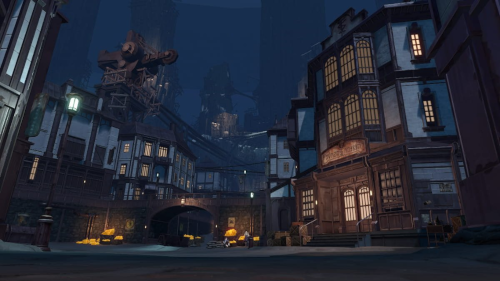
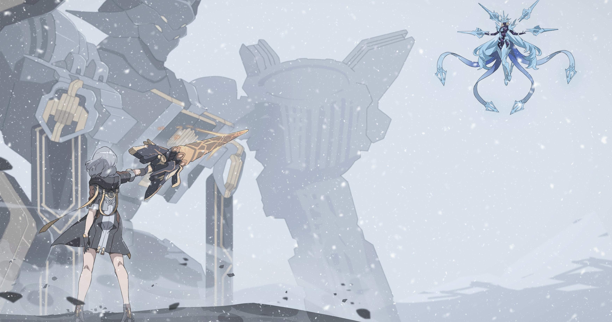
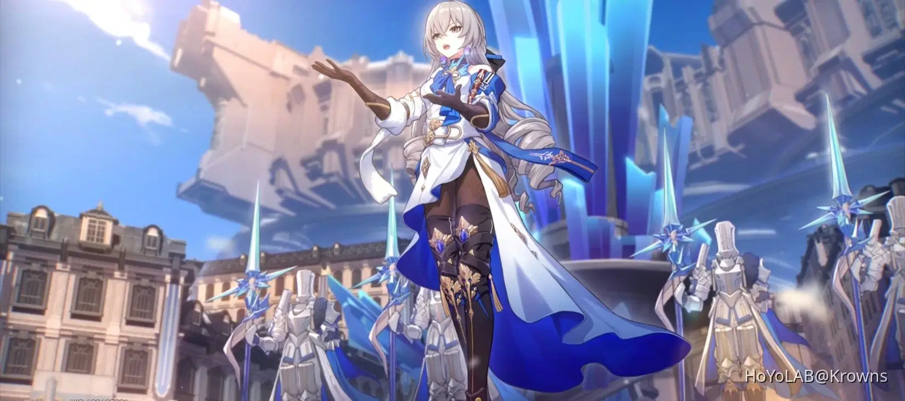

The Trailblazer and their companions land on the frozen planet Jarilo-VI, arriving in the last remaining city: Belobog. They are welcomed by Bronya and Gepard, high-ranking officials of the Silvermane Guards, and introduced to the city’s apparent prosperity under the Supreme Guardian.

After suspicions rise and the Trailblazer uncovers signs of a hidden truth, they are exiled to the Underworld. There, they meet Seele, Clara, Sampo, and the leader of the resistance group Wildfire, Oleg. The Trailblazer learns about the deep social divide and oppression enforced by the ruling elite above.

With the help of the Underworld residents and a growing alliance with Bronya, who begins to question her orders, the Trailblazer fights to expose the truth about the Stellaron and the city's fabricated history. This culminates in a return to the surface and direct confrontation with Cocolia, the Supreme Guardian.

The Trailblazer battles Cocolia, who is revealed to be under the influence of the Stellaron and a mysterious force connected to the Fragmentum. With the help of Seele and Bronya, they defeat her and destroy the Stellaron’s influence over the city.

Following the conflict, Bronya takes up the mantle of Supreme Guardian with a new vision for unity between the Overworld and Underworld. The Trailblazer earns the trust and gratitude of the people of Jarilo-VI and departs with valuable knowledge and experience.


The heir to Belobog’s Supreme Guardian, Bronya is a composed and capable leader torn between duty and truth. Initially a loyal enforcer of the city's order, she gradually begins to question the world she was raised to protect. Her journey from obedience to rebellion is key to uncovering the secrets of Jarilo-VI and guiding its future.
A fierce and independent fighter from the Underworld, Seele is a core member of Wildfire, dedicated to protecting her people. Haunted by the past and driven by hope, she clashes with the Overworld’s control while holding onto her bond with Bronya. Her strength and resolve help shape the Trailblazer’s path through Jarilo-VI.
Captain of the Silvermane Guards, Gepard is a steadfast protector of Belobog’s Overworld. Bound by honor and a strong sense of duty, he initially opposes the Trailblazer’s efforts—until truth and loyalty begin to collide. Beneath his disciplined exterior lies a heart willing to change for what’s right. His commitment to justice ultimately shapes his role in Belobog’s new future.
Once a brilliant mechanic and now the owner of the Neverwinter Workshop, Serval is a rebellious spirit with a sharp mind and a louder guitar. As Gepard’s older sister, she chose to walk her own path, supporting the Underworld from the shadows. Her wit, tech skills, and punk energy make her an invaluable ally to the Trailblazer and Wildfire alike.
A smooth-talking trickster with questionable morals and a knack for survival, Sampo always seems to show up where trouble brews. Though he claims to act in his own interest, his actions often help the Trailblazer and Wildfire in unexpected ways. Charming, slippery, and unpredictable—he’s the kind of ally you can’t fully trust, but can’t do without.